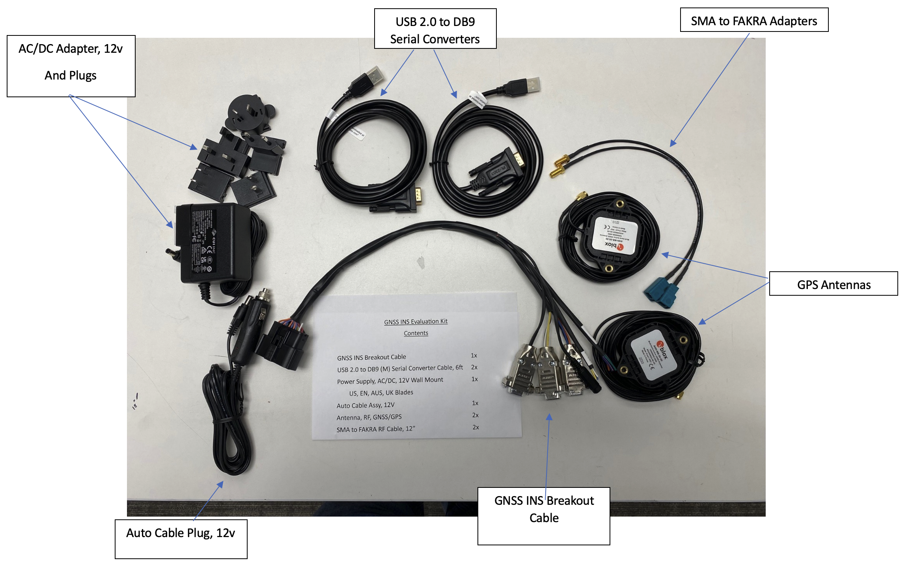
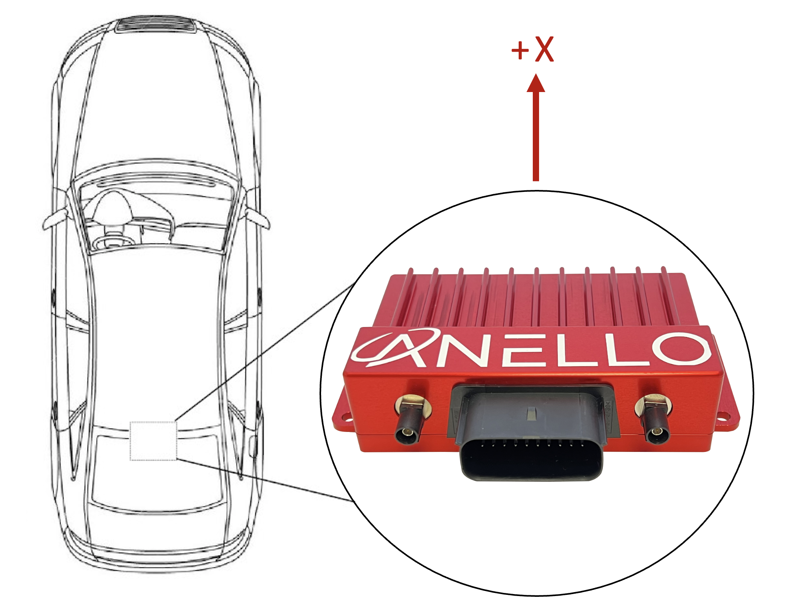

GNSS INS Getting Started Guide
Thank you for choosing the ANELLO GNSS INS! This step-by-step guide will get you started with connection, configuration and data collection. Please contact support@anellophotonics.com with any questions.
1. Hardware Connections
The ANELLO GNSS INS unit is pictured below. It features a 20 pin automotive-grade Molex MX150 connector and two FAKRA SMB GNSS connectors.

If you received an ANELLO GNSS INS Loaner unit, you will also receive the Accessory Kit with the items pictured below. For GNSS INS purchases, the Accessory Kit is sold separately and more information is available upon request.
{kind=link}
To use the GNSS INS Evaluation Kit, connect the hardware as follows:
Connect breakout cable to GNSS INS unit
Connect to power using either the AC/DC adapter or the Auto Cable Plug.
Connect primary GNSS antenna to ANT1 using SMA to FAKRA Adapters. An additional antenna (ANT2) is optional and enables stationary dual heading.
Connect to computer via RS-232 using USB 2.0 to DB9 serial converters for configuration.
If you’d like to use the automotive ethernet interface, connection over serial is required first to configure IP addresses.
An SCD drawing of the GNSS INS and a schematic of the Accessory kit breakout cable can be found in Mechanicals.
2. Software Interfaces
ANELLO provides a Python tool to connect, configure, and log data with the GNSS INS. Please see instructions on ANELLO Python Tool to install and run the Python tool. Be sure to run “git pull” regularly to make sure you are using the latest Python tool updates.
ANELLO units are also compatible with ROS using our C-based ROS driver.
If you would like to connect to the GNSS INS using a serial interface software such as CoolTerm, please ensure you use the correct baud rate (default for the GNSS INS is 230400), and set Data Bits = 8, Stop Bits = 1, and Parity = None.
For a full list of software tools, please see Software Tools.
3. Vehicle Installation
The GNSS INS can be configured for various installation positions. To minimize configuration steps, mount near the center of the vehicle’s rear axle, with the X-forward facing the direction of travel.
{kind=link}
The GNSS antennae can be magnetically mounted on the roof of the vehicle. See Antenna Mounting for requirements on antenna installation.
4. Configure ANELLO GNSS INS
Before testing the ANELLO GNSS INS, please review and set:
1. Unit Configurations: Common Unit Configurations which change between setups are Orientation, Misalignment Angle, and Odometer Units. If you would like to use the Ethernet interface, please turn on “Enable Ethernet Output” and set UDP-related configurations.
Vehicle Configurations: All lever arm measurements and calibrations must be completed prior to drive testing.
The easiest way to change configurations is using the ANELLO Python Tool. Select Unit Configuration from the main menu. The default configurations will appear, and you can select Edit to change a configuration.
You may also send configurations manually using the #APCFG command over the GNSS INS configuration port (RS232-2) using a serial interface software such as CoolTerm.
Note
As of firmware v1.2.6, the antenna baseline must be calibrated to use dual antenna functionality. Please refer to Vehicle Configurations to ensure all vehicle configurations are set properly.
5. Connect to NTRIP Caster
Standard RTCM messages can be forwarded to the ANELLO GNSS INS data port to enable the GNSS receivers to reach RTK-level accuracy. The GNSS INS receives standard RTCM3.3 in MSM format, including MSM4, MSM5, and MSM7 messages.
The ANELLO Python Program also provides an NTRIP caster which can connect to a standard NTRIP network and forward the received RTCM messages into the GNSS INS.
From the Python tool main menu, select NTRIP and then Start. Enter the NTRIP caster details as prompted. The System Status will show the NTRIP connection status.
Corrections must be configured to the WGS84 coordinate frame. Our inertial navigation system assumes WGS84 as the reference coordinate system, and using a different coordinate frame may result in incorrect positioning and navigation data.
6. Data Collection & Visualization
a. Log Data
ANELLO recommends logging data using either: 1. ANELLO Python tool, by selecting Log in the main menu, OR 2. ANELLO ROS driver
b. Monitor Data Output
The ANELLO Python Tool can be used to monitor data from the ANELLO GNSS INS in real-time by selecting Monitor in the main menu.
c. Data Visualization
The INS solution can be visualized by importing ins.csv into Kepler. You may also use a CSV to KML converter to visualize the results in Google Earth, but note that these tools often have data length limitations.
7. Drive Testing
Before conducting drive testing, please review Drive Testing Best Practices to ensure the system is set up properly, initializes correctly, and is optimized for your use case.
If you would like help from the ANELLO team on data analysis and fine-tuning, we ask that you please share:
The raw log file starting at power-up and including the entire drive period
The config file (using the “Save Configs” option in the Python tool main menu).
Pictures of the installation (ANELLO unit and antennae)
Description of testing goals and performance requirements
Congratulations!!! You have completed the GNSS INS setup and data collection! Please feel free to contact support@anellophotonics.com with any questions.